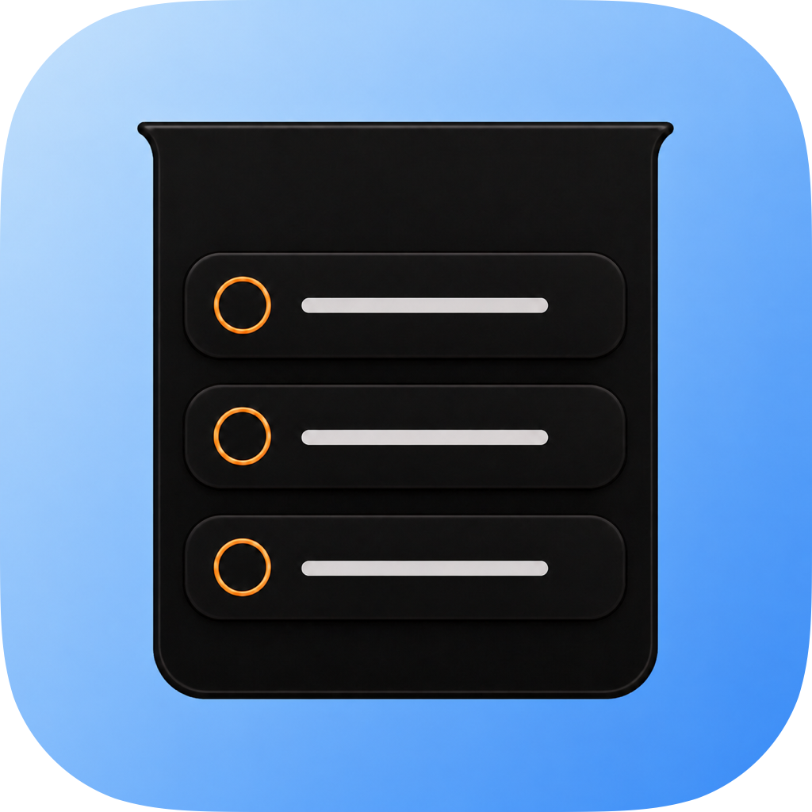
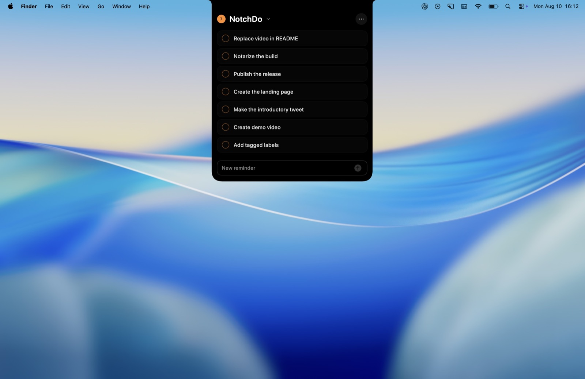
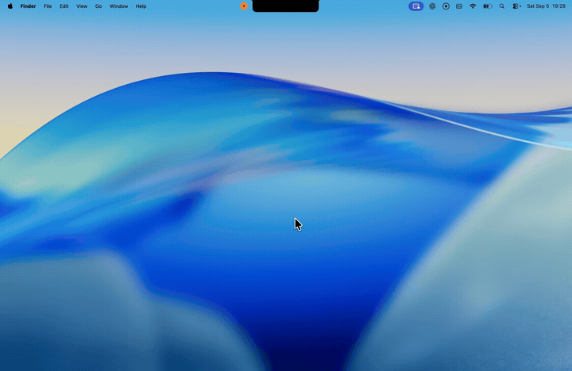

Appears in an instant
Move to the notch and your list unfolds with a fluid, native transition.

NotchDo DownloadCapture, review, and complete Apple Reminders without breaking focus. NotchDo stays out of sight until the moment you need it.
Requires macOS 14 Sonoma or later · Free and open source

In your flow
The everyday things you do in Reminders—close enough to reach, quiet enough to forget about.

NotchDo in motion
Move to the notch and your list unfolds with a fluid, native transition.
Type, press Return, and get back to what you were doing.
Edit dates, notes, priority, recurrence, and lists without opening another app.
Notch native
A purpose-built panel follows your active display and stays available across Spaces.
Keyboard ready
Compose, submit, edit, and dismiss with familiar keyboard interactions.
Always in sync
Changes flow through EventKit, including edits made elsewhere on your devices.
Private by architecture
NotchDo connects directly to Apple Reminders on your Mac. There is no NotchDo account, no separate database, no analytics pipeline, and no server receiving your tasks.
Read the source on GitHubLess window. More flow.
macOS 14+ · MIT licensed · Open source